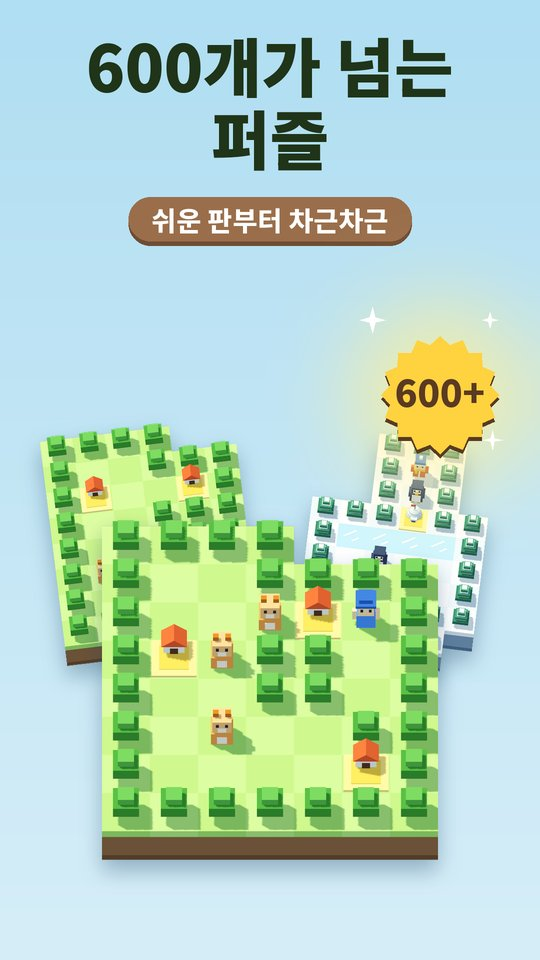
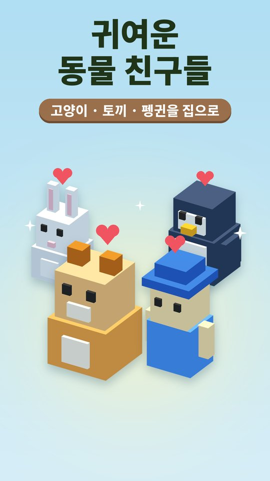
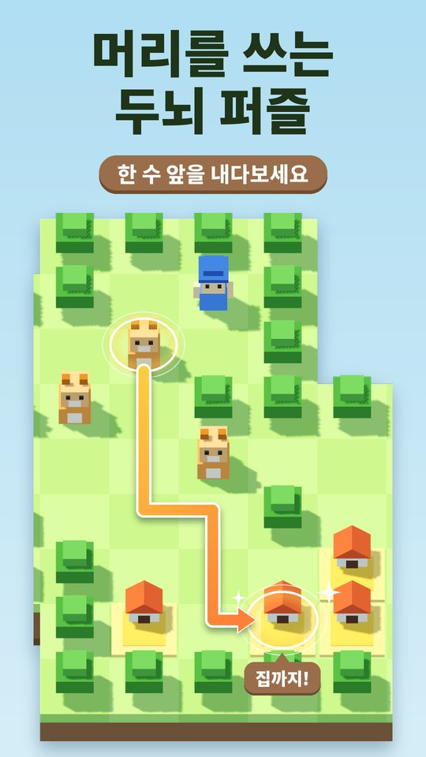
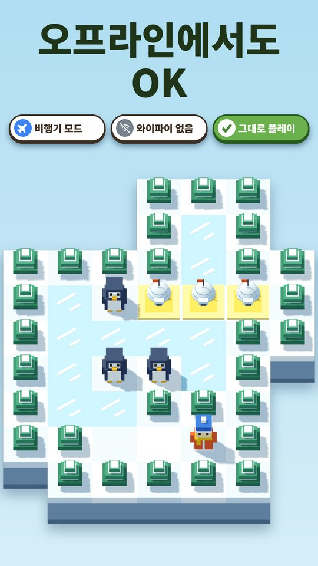

이런 게임이에요
- 규칙은 한 줄 — 동물을 모두 집에 밀어 넣으면 클리어. 밀 수만 있고 당길 수는 없어요.
- 오리지널 농장: 고전 상자 밀기. 세 수짜리 첫 판부터 긴 판까지 차근차근.
- 눈밭 농장: 얼음 위로 민 동물은 무언가에 막힐 때까지 미끄러져요.
- 토끼 농장: 고양이와 토끼가 함께 나와요. 고양이는 고양이 집, 토끼는 토끼 집으로.
- 인터넷 없이 됩니다. 시간 제한도, 목숨도 없어요.
- 잘못 밀었으면 되돌리기, 막히면 정답 보기.
- Google 계정과 연동하면 기기를 바꿔도 진행도가 이어져요.
이런 분께 추천해요
- 소코반, 창고지기, 상자 밀기 퍼즐을 좋아했던 분
- 와이파이 없이 할 수 있는 오프라인 게임을 찾는 분
- 귀여운 동물이 나오는 차분한 힐링 퍼즐을 원하는 분
PushPush — Animal Sokoban Puzzle
Push lost animals back home in this cute sokoban (box-pushing) puzzle. Get every animal into its house to clear the stage. Fully offline — no Wi-Fi needed. You can push, but you can't pull, so think ahead.
- Original Farm: classic box pushing, from a three-move warm-up to long, tricky boards.
- Snow Farm: animals pushed onto ice slide until something stops them.
- Rabbit Farm: cats and rabbits together. Cats go to cat houses, rabbits to rabbit houses.
- No timers, no lives. Undo any push, or watch the solution when you're stuck.
- Available in English, Korean and Japanese.